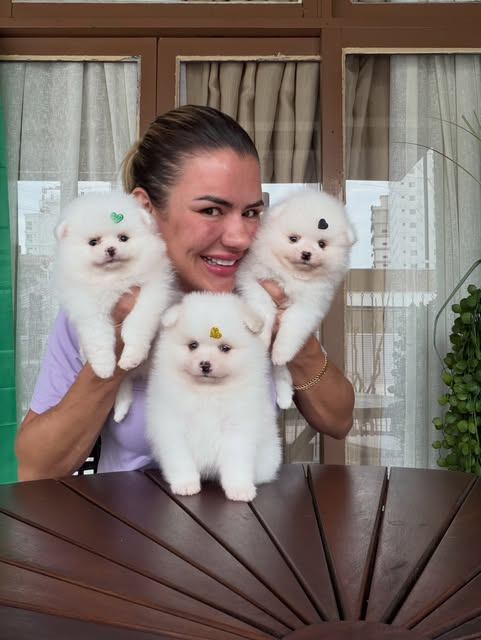
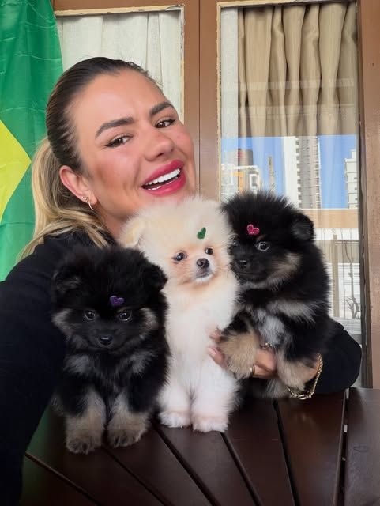
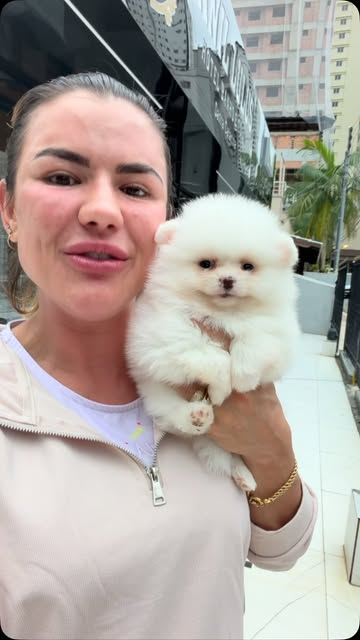
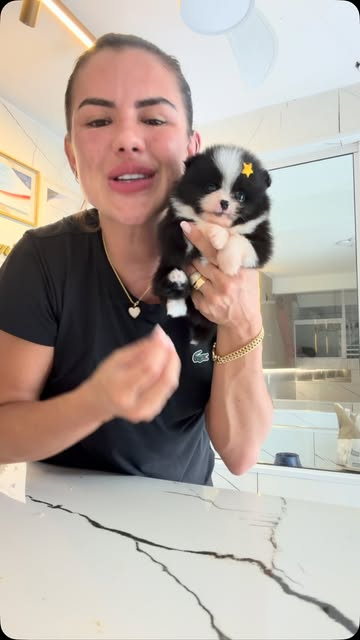
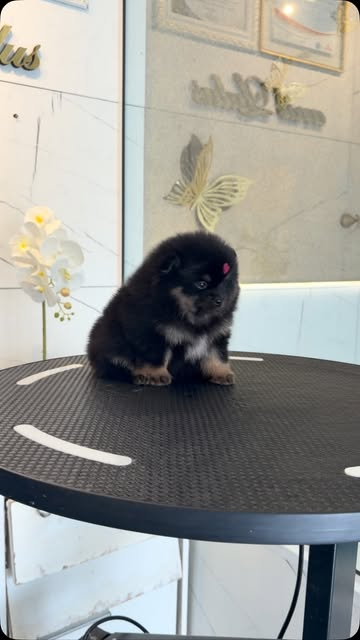
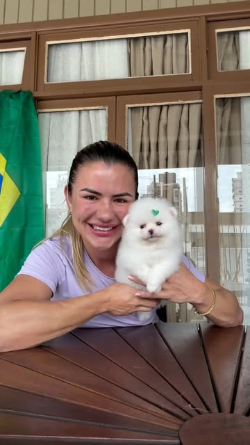
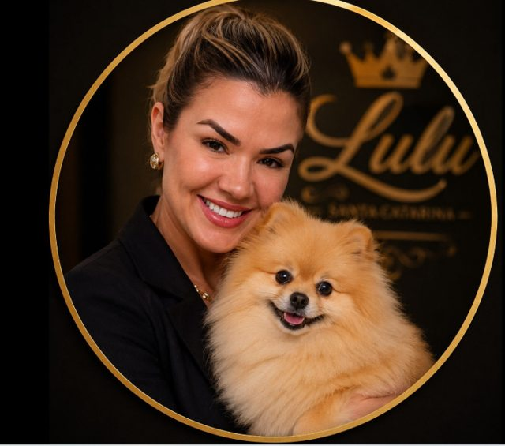
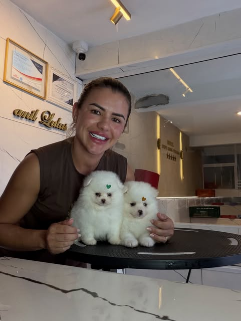
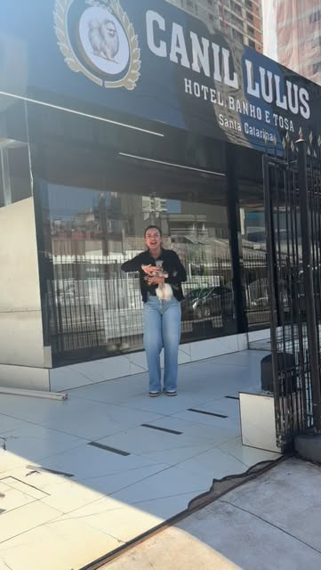

Saúde
Seleção criteriosa dos pais, de linhagem importada e alto padrão. As mamães são respeitadas e bem cuidadas em cada ninhada.
Ju, qual o valor?
Essa é a pergunta que eu mais recebo todos os dias. Antes do valor, deixa eu te mostrar de onde vem o seu Lulu: pais anões de linhagem importada, perfil ursinho e um temperamento feito pra viver em família.
Spitz Alemão Anão ou Lulu da Pomerânia, chame como preferir. Em Itapema, SC, cada filhote cresce acompanhado de perto até chegar na sua família.
Fotos reais, direto do Instagram do canil. Os filhotes disponíveis mudam com frequência, por isso a lista atualizada fica no WhatsApp.






Um Lulu bonito e doente, ou lindo e arisco, não é o que ninguém quer levar pra casa. Por isso a escolha dos pais olha três coisas juntas.
Seleção criteriosa dos pais, de linhagem importada e alto padrão. As mamães são respeitadas e bem cuidadas em cada ninhada.
Filhotes equilibrados e dóceis, pensados pra convivência real: crianças, visitas e a rotina corrida de uma família.
Porte anão e o perfil ursinho que fez a raça famosa, com pelagem cheia e carinha arredondada.

Eu sou a Juliana. Os filhotes nascem e crescem perto de mim, com socialização desde os primeiros dias, cuidado diário e desenvolvimento observado de perto. Eles não ficam presos: aqui, são nossos bebês.
Você fala direto comigo no WhatsApp, antes, durante e depois da chegada do seu filhote.
Falar direto com a Ju“O canil é extremamente limpo e organizado. Juliana cuida dos animais e do canil com muito zelo, amor e responsabilidade.”
Camila A., avaliação no Google
Tudo por escrito, com a documentação em dia.

Conte como é a sua casa e a sua rotina. Isso ajuda a indicar o filhote certo.
Você recebe fotos, vídeos, cores, informações dos pais e valores de cada filhote.
Escolheu? A reserva é formalizada com contrato de compra e venda.
O filhote chega vacinado e vermifugado, e a Ju continua disponível no pós-venda.

Cada filhote tem cor, sexo, porte e pais diferentes, e o valor muda conforme isso. No WhatsApp a Ju envia a lista atualizada dos disponíveis, com fotos, vídeos e valores.
Sim. São dois nomes usados no Brasil para a mesma raça em porte anão.
Vacinas e vermífugo em dia e contrato de compra e venda. O canil é certificado pela ALKC e tem alvará sanitário de funcionamento.
O temperamento é um dos critérios na escolha dos pais, e os filhotes são socializados desde cedo. Conte sua rotina para a Ju, e ela indica o filhote com o perfil mais adequado.
Chame no WhatsApp e informe sua cidade. A Ju explica as opções disponíveis para o seu caso.
Não encontrou sua dúvida?
Perguntar à JuOs filhotes disponíveis mudam com frequência. Pergunte agora quais estão prontos para ir para uma nova família.
Perguntar à Ju no WhatsAppResposta direta da criadora, sem robô.